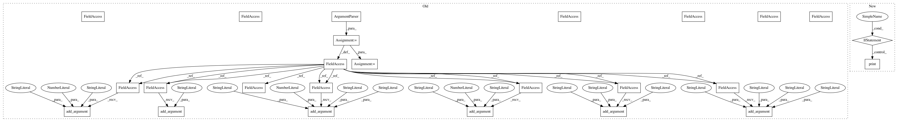

7645a5a90740ad0f9222620d8eda5c9a6544011c,chiron/chiron_eval.py,,,#,377
Before Change
if __name__ == "__main__":
parser = argparse.ArgumentParser(prog="chiron",
description="A deep neural network basecaller.")
parser.add_argument("-i", "--input", default="example_data/output/raw",
help="File path or Folder path to the fast5 file.")
parser.add_argument("-o", "--output", default="example_data/output",
help="Output Folder name")
parser.add_argument("-m", "--model", default="model/DNA_default",
help="model folder")
parser.add_argument("-s", "--start", type=int, default=0,
help="Start index of the signal file.")
parser.add_argument("-b", "--batch_size", type=int, default=1100,
help="Batch size for run, bigger batch_size will increase the processing speed and give a slightly better accuracy but require larger RAM load")
parser.add_argument("-l", "--segment_len", type=int, default=300,
help="Segment length to be divided into.")
parser.add_argument("-j", "--jump", type=int, default=30,
help="Step size for segment")
parser.add_argument("-t", "--threads", type=int, default=0,
help="Threads number")
parser.add_argument("-e", "--extension", default="fastq",
help="Output file extension.")
parser.add_argument("--beam", type=int, default=0,
help="Beam width used in beam search decoder, default is 0, in which a greedy decoder is used. Recommend width:100, Large beam width give better decoding result but require longer decoding time.")
parser.add_argument("--concise", action="store_true",
help="Concisely output the result, the meta and segments files will not be output.")
parser.add_argument("--mode", default = "dna",
help="Output mode, can be chosen from dna or rna.")
args = parser.parse_args(sys.argv[1:])
run(args)
After Change
time_dict["real"], time_dict["sys"], time_dict["user"], time_dict["sys"] + time_dict["user"]))
if __name__ == "__main__":
from .entry import main
print("This calling method is deprecated, use entry", file=sys.stderr)
main(["call"] + sys.argv[1:])
In pattern: SUPERPATTERN
Frequency: 3
Non-data size: 25
Instances
Project Name: haotianteng/Chiron
Commit Name: 7645a5a90740ad0f9222620d8eda5c9a6544011c
Time: 2018-04-29
Author: neven.miculinic@gmail.com
File Name: chiron/chiron_eval.py
Class Name:
Method Name:
Project Name: haotianteng/Chiron
Commit Name: 7645a5a90740ad0f9222620d8eda5c9a6544011c
Time: 2018-04-29
Author: neven.miculinic@gmail.com
File Name: chiron/chiron_eval.py
Class Name:
Method Name:
Project Name: tensorflow/models
Commit Name: 22a669d6c8ebe29114c72e4cebe900d599a15201
Time: 2018-07-20
Author: ray.yuan0@gmail.com
File Name: research/a3c_blogpost/a3c_cartpole.py
Class Name:
Method Name:
Project Name: lanpa/tensorboardX
Commit Name: ad2ff3124948b32978b41d5b3e66630f05d0f6fe
Time: 2018-06-07
Author: huang.dexter@gmail.com
File Name: beholder_demo.py
Class Name:
Method Name: